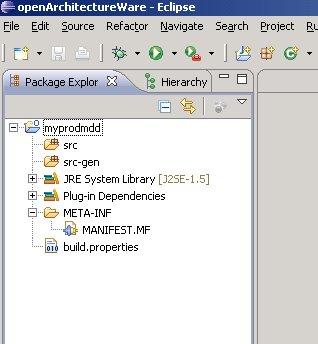
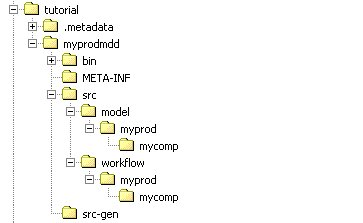
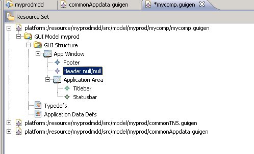

Questa mini-guida ha l'obiettivo di illustrare i passi necessari per impostare un progetto di generazione guigen. Si dà per scontata la corretta installazione del bundle eclipse-galileo e dei plugin mddtools e la dimestichezza con le funzionalità di base dell'IDE eclipse.
La struttura di un workspace tipicamente è costituita da:
E'importante notare che, affinchè questo flusso iterativo unidirezionale (round trip) vada a buon fine è necessario prestare molta attenzione a non modificare manualmente porzioni di codice generato non contenute in regioni protette: in caso contrario le modifiche apportate manualmente in aree non consentite sono irrimediabilmente perse alla rigenerazione successiva. Generalmente questa limitazione non costituisce un problema in quanto la struttura del codice generato è stata pensata appositamente con l'obiettivo di concentrare le aree di intervento manuale allo stretto indispensabile. Viceversa, una modifica arbitraria al di fuori delle regioni protette può compromettere il funzionamento dell'applicativo.
In sintesi i passi da compiere al fine di predisporre un progetto guigen sono i seguenti:
E'possibile scaricare i sorgenti completi del progetto generatore e del progetto generato qui
Per creare il progetto generatore è necessario utilizzare l'apposito wizard per progetti architectureware, che si attiva selezionando in eclipse la voce di menu:
[File] -> [new...] -> [openarchitectureware project]
Inserendo nel campo [project name] il nome del progetto generatore, che solitamente è
costituito da:
<cod_prodotto>mdd.
occorre inoltre lasciare non selezionato il check [create sample], in quanto non utile.
Sarà generata una struttura simile a quella riportat ain figura (nell'esempio il codice prodotto utilizzato è myprod

Per aggiungere al progetto geenratore le dipendenze necessarie è necessario agire nella apposita
schermata alla quale si accede tramite doppio click sul file META-INF/MANIFEST.MF
I plugin da aggiungere sono:
org.openarchitectureware.dependenciesguigenguigen.editorPredisporre la struttura di folder del progetto generatore secondo lo schema rappresentato in figura:

Come si può notare sotto la cartella src sono definite due cartelle:
model: contiene i modelli dell'intero prodottoworkflow: contiene gli script del workflow di generazione dell'intero prodottoEntrambe le cartelle sono ulteriormenbte strutturate secondo la struttura del prodotto, ovvero con una sottodirectory per ogni componente di rilascio prevista dal prodotto. Questa strutturazione permette di avere un unico progetto generatore che può generare uno o più componenti di prodotto.
Una volta predisposta la struttura del progetto il passo successivo è rappresentato dalla creazioen dei modelli che descrivono l'applicazione.
Il primo passo da compiere è rappresentato dalla creazione dei due file di libreria
commonTNS.guigen e commonAppdata.guigen. E' importante notare che
questi file sono condivisibili da più di un modello di applicazione guigen: per questo motivo
è consigliabile posizionare i file nella cartella dei modelli relativa al prodotto e non
nella cartella relativa al componente web.
Per creare i due file in questione è necessario utilizzare un apposito wizard, che si attiva selezionando da eclipse la voce di menu:
[File] -> [new...] -> [other...]
E selezionando tra i wizard disponibili il wizard "Librerie standard per modelli GUIGEN", disponibile nella cartella "guigen wizards".
A questo punto è necessario impostare nel campo [container] il percorso del
folder dei modelli comuni a tutto il prodotto (nell'esempio: myprodmdd/src/model/myprod).
Il wizard terminerà e saranno creati i due file di libreria.
[File] -> [new...] -> [other...]
E selezionando tra i wizard disponibili il wizard "Guigen model", disponibile nella cartella "guigen wizards".
Nella prima schermata del wizard è necessario impostare il percorso della cartella dove deve essere creato il file che,
essendo un file specifico del componente web, è rappresentato dalla cartella omonima
(nell'esempio: mycomp) e il nome del file stesso, che deve essere nel formato <cod_componente>.guigen.
Nella seconda schermata è necessario selezionare nella combo [model object] l'elemento
GUIModel, corrispondente alla classe dell'elemento che deve essere creato come root del modello.
Nella terza schermata è necessario inserire le informazioni identificative del componente, ovvero:
Nella quarta schermata è necessario inserire la posizione della cartella nella quale sono stati creati i
due file di libreria commonTNS.guigen e commonAppdata.guigen.
Al termine dell'esecuzione del wizard sarà creato lo scheletro del modello dell'applicazione, che referenzierà i due file di libreria.

A questo punto è necessario impostare alcune informazioni generali dell'applicativo:
Il passo successivo è rappresentato dalla creazione di un AppModule destinato a contenere la home page dell'applicativo: supponiamo che tale AppModule si chiami home. Per fare ciò è necessario creare un apposito file di modello tramite il wizard che si attiva selezionando da eclipse la voce di menu:
[File] -> [new...] -> [other...]
E selezionando tra i wizard disponibili il wizard "Guigen model", disponibile
nella cartella "guigen wizards".
La creazione di un modello di AppModule è simile alla creazione del modello principale dell'
applicazione, con la sola differenza che nella schermata di selezione del [model object] è
necessario selezionare la classe AppModule invece che la classe GUIModel. Il file del modulo
sarà creato nella cartella modules.
Al termine dell'esecuzione del wizard verrà aperto l'editor del file di modello appena creato. A questo punto è necessario impostare il nome dell' AppModule inserendolo nella property name.
E' ora il necessario modellare la home page all'interno dell'AppModule home e successivamente collegare il modulo e la home page al modello principale. Per semplicità nell'esempio si creerà un pannello senza widget (vuoto) con layout verticale.
Per modellare la home-page è necessario eseguire i seguenti passi:
[new child]->[content panel][new child]->[form panel]
[new child]->[vertical flow panel layout]
Per referenziare il nuovo AppModule e la home page nel modello principale dell'applicativo è necessario eseguire i seguenti passi:
[load resource...] e selezinare nel workspace il file dell'
AppModule
A questo punto il modello (seppur molto semplice) è pronto per una prima generazione.
build/classes (come previsto da standard)src/java,
come previsto da standardIl processo di generazione è comandato da un workflow di generazione descritto da un apposito script di workflow openarchitectureware. Questo engine di generazione permette di costruire workflow anche molto sofisticati. Il minimo workflow necessario deve prevedere alcuni passi:
src/workflowe, tramite tasto destro,
azionare il wizard di creazione di un nuovo file openarchitectureware->Workflow file.
A questo punto è sufficiente copiare il seguente snippet di codice (avendo cura di modificare
se necessario i puntamenti ai file di modello o il nome del progetto target):
<?xml version="1.0"?>
<workflow>
<!-- test del modulo "home" -->
<cartridge file="it/csi/mddtools/guigen/workflow/guigenCheck.oaw"
model="myprodmdd/src/model/myprod/mycomp/modules/home_module.guigen"
portal="neutral"
/>
<!-- test del modello principale -->
<cartridge file="it/csi/mddtools/guigen/workflow/guigenCheck.oaw"
model="myprodmdd/src/model/myprod/mycomp/mycomp.guigen"
portal="neutral"
/>
<!-- generazione del codice -->
<cartridge file="it/csi/mddtools/guigen/workflow/struts2Basic.oaw"
model="myprodmdd/src/model/myprod/mycomp/mycomp.guigen"
targetProjectName="mycomp"
portal="neutral"
/>
</workflow>
Come si può notare nel workflow sono richiamate due cartridge fornite con il plugin guigen:
Riguardo all'ultima cartridge configurata, ovvero quella di generazione, è ancora importante spiegare il
significato dell'attributo portal: a seconda del valore di questo attributo verrà generato
codice coerente con gli standard dei vari portali.
I valori ammessi sono descritti nella tabella seguente:
| valore | descrizione | gestione risorse grafiche |
|---|---|---|
| sisp | generazione view coerente con gli standard del sito "sistema piemonte" | le risorse grafiche sono mantenute sul web server del sito, header e footer sono incluse tramite remote include |
| intranetrp | generazione view coerente con gli standard del sito intranet della regione piemonte | le risorse grafiche sono contenute nel pacchetto applicativo, header e footer sono incluse nel pacchetto |
| rupar | generazione view coerente con gli standard del sito "rupar piemonte" (vecchia versione) | le risorse grafiche sono mantenute sul web server del sito, header e footer sono incluse tramite remote include |
| newrupar | generazione view coerente con gli standard del sito "rupar piemonte" (nuova versione) | le risorse grafiche sono mantenute sul web server del sito, header e footer sono incluse tramite remote include |
| neutral | generazione view indipendente dal portale di installazione (xhtml "universale") | le risorse grafiche sono contenute nel pacchetto applicativo, header e footer sono incluse nel pacchetto |
ris all'interno della
cartella src/web/<nome_componente>.
Per eseguire il workflow definito al passo precedente è sufficiente selezionare il file .oaw
e, tramite tasto destro, azionare l'esecuzione ([run as] -> [oaw workflow]).
Se i check e la generazione hanno successo la console presenterà il messaggio:
INFO WorkflowRunner - workflow completed in ... ms!
più eventuali warning.
Nel caso invece in cui vi siano degli errori nel modello, la console li presenterà al termine dell'esecuzione.
Se ad esempio ci si scordasse di impostare la home page, nella console apparirebbe un messaggio simile al seguente:
ERROR WorkflowRunner - Deve essere definito il content panel di homePage: [guigen::ApplicationArea, null] [it.csi.mddtools.guigen.impl.ApplicationAreaImpl@e3c624]
In questo caso sarebbe necessario correggere gli errori sul modello e rilanciare la generazione.
Se la generazione ha avuto buon esito nel progetto target compariranno le risorse generate, ovvero:
Il progetto generato da guigen è un progetto standard CSI importato in un workspace eclipse:
di conseguenza le operazioni di build/deploy del progetto sono quelle standard che si effettuerebbero
con un progetto java generato manualmente.
Come si può notare il progetto così generato presenta degli errori di compilazione in eclipse:
ciò è dovuto alla ovvia mancanza delle librerie da cui dipendono i sorgenti java.
Al fine di ottenere un progetto che compili senza errori nell'IDE è necessario dunque scaricare da
repart, tramite ivy, tali librerie: questa operazione è realizzabile richiamando il task
load-dependencies nello script di ant build.xml e, successivamente, impostare tali librerie nel
build path. A tale scopo è importante notare che
i build standard CSI necessitano dell'estensione per ivy 2.0. La configurazione di ANT in
eclipse esula dagli obiettivi di questo tutorial.
TIP: è consigliabile, dopo ogni rigenerazione effettuare un clean del progetto target.
Prima di poter effettuare il build del progetto è necessario configurare le properties di configurazione
del target di build: per far ciò è necessario creare i file di configurazione
relativi ai target desiderati (es. dev.properties) a partire dal file
target_template_file.properties e configurare i valori delle property necessarie.
L'insieme delle property che sarà configurare variano a seconda degli elementi di modellazione
inseriti, ad esempio a seconda del tipo di autenticazione/SSO previsto o a seconda della cartuccia di
layout utilizzata.
A questo punto è possibile effettuare il build del progetto e installare il pacchetto generato nell'application server destinato ad ospitarlo. Per testare l'applicativo sarà sufficiente puntare da un browser alla root del contesto web (che ha lo stesso nome del componente, nell'esempio http://<hostname:port>/mycomp).
Il risultato atteso è quello rappresentato nella figura seguente.